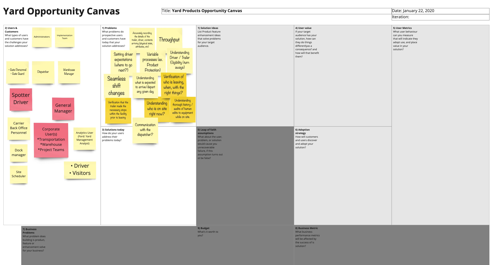
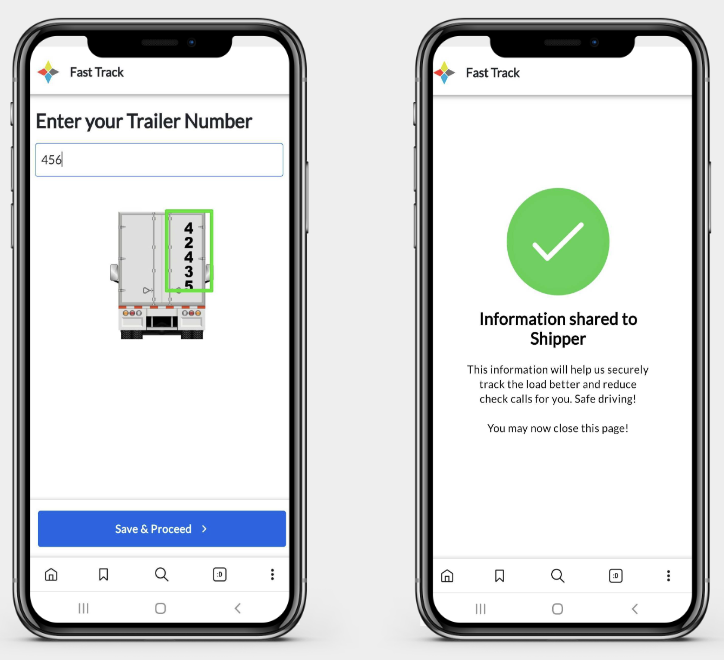

Fast Track: Bridging the Tracking Gap
A QR-based, contactless check-in flow that closed the visibility gap for loads with no GPS or ELD data.
Research · Product Design
Problem statement
FourKites' primary objective is to deliver 100% end-to-end supply chain visibility to every customer, increasing their agility, efficiency, and sustainability. But we consistently heard the same complaint: "load not tracking." Most of the time, the carrier simply hadn't shared asset, GPS, or ELD information with FourKites — making these loads impossible to track and putting real risk on our customers' operations.
Overview
Fast Track is a simple solution that fills the tracking gap for loads without an assigned asset, while capturing more detail on the carriers hauling a shipment. It replaces manual, paper-based check-in processes and moves facility operations toward the goal of 100% tracking — letting facility users go completely contactless while still gathering the details they need from drivers.

From kiosks to QR codes
We initially ideated a kiosk-based check-in for yard gates: a driver arrives, checks in at a device planted at the gate. User research quickly revealed why that wouldn't work. Interviews and observations with drivers and yard managers surfaced three blockers:
- Cost concerns — many yards run on tight budgets and couldn't justify kiosk hardware.
- Technology barriers — a large share of drivers weren't comfortable with kiosk interfaces.
- Operational feedback — yard managers preferred solutions that didn't require new infrastructure.

We pivoted to a mobile-first, QR-code-based check-in. It eliminated the cost of kiosks, met drivers on a device they already carried, and matched an interaction pattern — scanning a code — they already understood.
What is Fast Track?
A simple web-based tool for drivers that starts the moment they scan a QR code. From there, drivers can share carrier and asset information, and capture check-out (picked-up event) and Hours-of-Service break details — no app install, no facility hardware, fully self-service.

Beyond check-in, Fast Track captures asset assignment details at pickup, generates ETAs and pickup status for every load that uses it, initiates tracking for carriers with existing GPS integrations, and pushes out-of-network carriers to FourKites Connect.

Validated with a real customer
We prototyped in Figma, walked the yard journey in Miro, and ran moderated user testing with drivers and facility staff before rolling the pattern out. Land O'Lakes was one of the first customers to put Fast Track into production, giving us a real-world read on adoption and impact beyond the lab.

Impact
Fast Track eliminated manual, paper-based check-in for unassigned loads and moved facility operations toward FourKites' 100% tracking goal — without requiring customers to invest in gate hardware. Because it runs entirely on a driver's own phone, it scaled to new facilities with no on-site infrastructure and gave carriers without GPS or ELD systems a fast, self-service path into the visibility network.